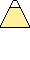

<!DOCTYPE html>
<html lang="ja">
 <head>
  <meta charset="utf-8">
  <title>ドット絵作成ツール</title>
  <style>
  table { border-collapse: collapse; }
  td {
   width: 30px;
   height: 30px;
   border: solid 1px;
  }
  </style>
 </head>
 <body>
  <div>
   <table id="dotTBL"></table>
   <br>
   <table id="ColorTBL"><tr></tr></table>
  </div>
  <br>

  <div>
   <input type="button" value="消去" onclick="clearCell()">
   <input type="button" value="画像変換" onclick="drawCanvas()">
   <canvas id="picture" width="16" height="16" style="border:solid 1px;"></canvas>
  </div>

  <script>
  var Matrix_Rows = 16;
  var Matrix_Cols = 16;
  var Color_Index = "black";

  var dotTbl = document.getElementById("dotTBL");//ドット絵を描くテーブル
  var colTbl = document.getElementById("ColorTBL");//色を選ぶテーブル

  var cvs = document.getElementById("picture");//キャンバス
  var ctx = cvs.getContext("2d");

  //ドット絵を描くテーブルを用意する
  function dotTable() {
   for(var i=0; i<Matrix_Rows; i++) {
    var row = dotTbl.insertRow(-1); //行を追加する　-1の指定で最後の行として追加される
    for(var j=0; j<Matrix_Cols; j++) {
     var cell = row.insertCell(-1); //その行にセル(列)を追加する
     cell.onclick = function(){
      this.style.backgroundColor = Color_Index; //クリックしたセルに色を付ける
     }
    }
   }
  }

  //選べる色を配列で定義する
  var COL_SAMPLE = [ "black", "gray", "silver", "white", "maroon", "red", "orange", "gold", "yellow", "lime", "cyan", "blue", "magenta", "violet", "pink" ];

  //色を選ぶテーブルを用意する
  function colorTable() {
   for (var j=0; j<COL_SAMPLE.length; j++) {
    var cell = colTbl.rows[0].insertCell(-1); //j番列のセル
    cell.style.backgroundColor = COL_SAMPLE[j];
    cell.innerHTML = "";
    cell.style.padding = "0px";
    cell.style.border = "0px";
    cell.onclick = function(){
     Color_Index = this.style.backgroundColor; //クリックした時に色を取得する
    }
   }
  }

  //全てのセルを白色にする関数
  function clearCell() {
   for (var i=0; i<Matrix_Rows; i++) {
    for (var j=0; j<Matrix_Cols; j++) {
     dotTbl.rows[i].cells[j].style.backgroundColor = "white";
    }
   }
   ctx.fillStyle = "white";
   ctx.fillRect( 0, 0, 16, 16 );
  }

  //キャンバスにドット絵を描く
  function drawCanvas() {
   for (var i=0; i<Matrix_Rows; i++) {
    for (var j=0; j<Matrix_Cols; j++) {
     var col = dotTbl.rows[i].cells[j].style.backgroundColor;//セルの色を取得する
     ctx.fillStyle = col;//キャンバスを描く色を設定する
     ctx.fillRect( j, i, 1, 1 );//長方形を描く命令
    }
   }
  }

  window.onload = function() { //HTMLが読み込まれると働く関数
   dotTable();		//ドット絵を描くテーブル
   colorTable();	//色を選ぶテーブル
   clearCell();		//最初にマスをクリアしておく
  }
  </script>
 </body>
</html>
